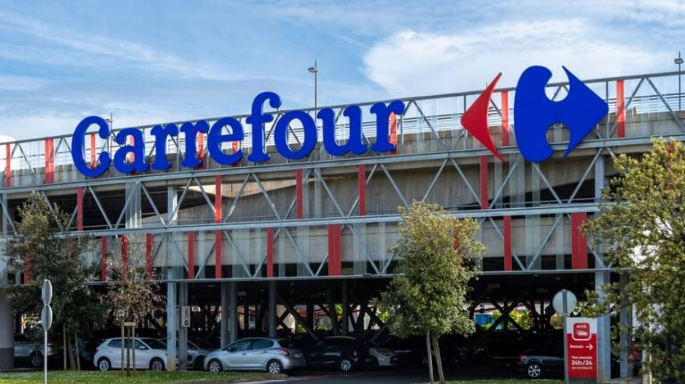

Carrefour Argentina frena su venta y anuncia la apertura de 42 sucursales para 2026
La cadena de supermercados canceló su proceso de salida del país y anunció un plan de expansión que incluye nuevos locales y la creación de 400 puestos de trabajo.

Tras un período marcado por la incertidumbre y rumores de desinversión, el CEO de Carrefour Argentina confirmó que la compañía ha decidido cancelar cualquier proceso de venta de su operación local. En cambio, la firma francesa presentó un ambicioso plan de expansión para el año 2026 que contempla la inauguración de 42 nuevos puntos de venta en distintos puntos estratégicos del país.
Esta decisión marca un cambio de rumbo significativo, apostando por la permanencia y el crecimiento en el mercado argentino frente a un escenario de consumo que busca alternativas de ahorro.
El plan de crecimiento se centrará principalmente en dos formatos que vienen demostrando una gran resiliencia y aceptación por parte de los consumidores argentinos. La empresa prevé abrir 40 nuevas tiendas bajo la bandera Carrefour Express, reforzando su estrategia de proximidad en los barrios para compras diarias y rápidas. Complementariamente, se sumarán dos sucursales de Carrefour Maxi, el formato mayorista que permite a los clientes finales y pequeños comerciantes acceder a precios más competitivos mediante la compra por volumen.
Esta expansión física traerá aparejado un impacto positivo en el mercado laboral, ya que la compañía estima la creación de 400 nuevos puestos de trabajo directos para cubrir la demanda de los nuevos locales. El anuncio se produce en un contexto donde el sector minorista busca adaptarse a los nuevos hábitos de consumo, y la inversión de la cadena francesa representa un fuerte respaldo a la actividad económica nacional. La generación de empleo genuino es uno de los pilares que la empresa destacó como parte de su compromiso renovado con el desarrollo local.
Como parte de este movimiento inicial, ya se han concretado las primeras aperturas del año con la inauguración de dos nuevas tiendas Express en Buenos Aires y Córdoba.
Estas incorporaciones forman parte de la etapa preliminar del plan integral que busca consolidar la capilaridad de la marca en los centros urbanos más densamente poblados. Con este anuncio, Carrefour reafirma su liderazgo en el sector de supermercados, priorizando la cercanía y el formato mayorista como motores principales de su estructura de negocios para los próximos meses.